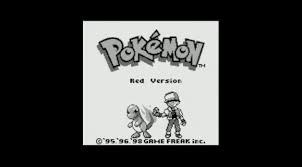
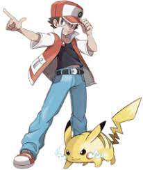

Red has great skills when it comes to being a pokemon trainer. When he is defeated in battle, he always learns from it to get stronger.
He differs from the game version a lot. In the mangas, he doesn't know Blue until after he meets Team Rocket the first time, talking about a mew. He sees Blue battling the mew with a charmander, as he recalls the pokemon. The sight of Blue recalling the charmander angers Red, so he tries to battle the mew. He is quickly beaten, as the only pokemon he has is a poliwhirl. 
In the manga, his poliwag evolves into a poliwhirl because Red was drowning, and the poliwag couldn't save him. He beat and became the champion in from the Red, Green, and Blue chapter. In the Yellow chapter, years after the last chapter, He goes to Mt. Moon to battle Bruno. He is then confronted by Lorelei and Agatha. Soon after, Lorelei freezes him in ice.
He is the canon playable character in the Red, Green, Blue, and Yellow series (Gen I), as well as the male character in Fire Red and Leaf Green (Gen III). He then makes appearances in other pokemon games like Gold, Silver,and Crystal (Gen II), Heart Gold and Soul Silver (Gen IV), Black2 and White2 (Gen V),and Sun, Moon, Ultra Sun, Ultra Moon, Let's Go Eevee, and Let's Go Pikachu (Gen VII).
